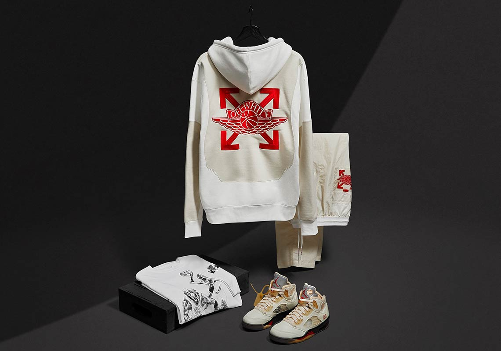

Collaborations

In early 2017, the company collaborated with Nike and worked on a project named "The Ten", which is a sneaker collection featuring Air Jordans, Converse, Nike Air Max, Nike Air Force One, and Nike Blazers shoes.[8] The collaborations shoe line was divided into two categories, the "Revealing" and "Ghosting".[9][10] The Off-White and Nike designers had an updated take on Nineties-style shoes, with various patterns and different types of material such as plastic and tulle.